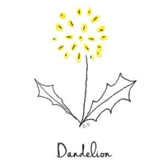
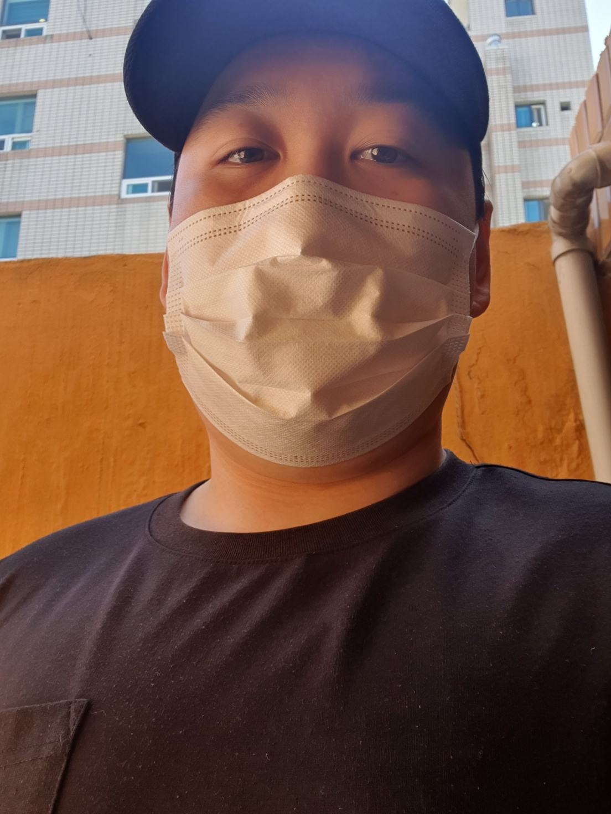
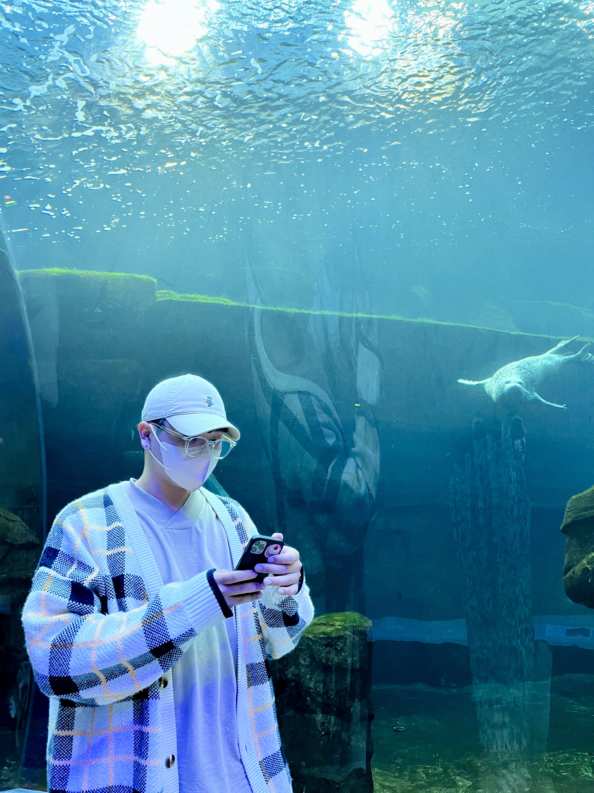
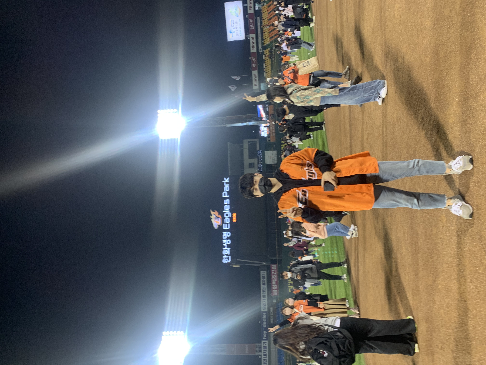
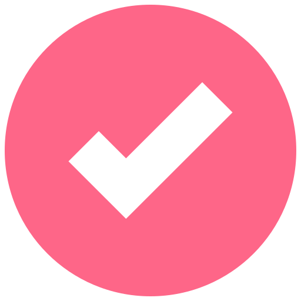

우리팀을 소개합니다

"민들레란?"
주변에서 쉽게 찾아볼 수 있는 식물로, 위치한 환경이 아무리 열악하더라도 깊게 뿌리를 내려 견디고 강인하게 성장해나갑니다.
주변에서 쉽게 찾아볼 수 있는 식물로, 위치한 환경이 아무리 열악하더라도 깊게 뿌리를 내려 견디고 강인하게 성장해나갑니다.
"그래서 왜?"
그 이름처럼 어떤 환경에서든 끈기있게 도전하고, 복잡하고 빠르게 변화하는 현대나 미래의 IT 환경 속에서도 꾸준한 성장을 이어나가는 개발자들로 거듭나려는 것을 목표로 하고 있습니다. 민들레처럼 우리 팀도 어떤 어려움 속에서도 끊임없이 성장하고 발전하는 모습을 보여드리고자 합니다.
그 이름처럼 어떤 환경에서든 끈기있게 도전하고, 복잡하고 빠르게 변화하는 현대나 미래의 IT 환경 속에서도 꾸준한 성장을 이어나가는 개발자들로 거듭나려는 것을 목표로 하고 있습니다. 민들레처럼 우리 팀도 어떤 어려움 속에서도 끊임없이 성장하고 발전하는 모습을 보여드리고자 합니다.
-윤인석-
 포기하지 않으면 실패는 없다.
-진유록-
어제보다 나아진 오늘, 오늘보다 나아갈 내일
-권준혁-
나무보단 숲을 보자.
우리들의 목표
“성장하는 개발자”
개발자의 공부에는 끝이 없다고 생각합니다. 현재의 상태에 만족하지 않고 변화하는 기술등을 습득하며 꾸준히 성장하는 개발자가 되고 싶습니다.
개발자의 공부에는 끝이 없다고 생각합니다. 현재의 상태에 만족하지 않고 변화하는 기술등을 습득하며 꾸준히 성장하는 개발자가 되고 싶습니다.
“유연한 상황판단을 가진 개발자!”
기존의 방식에 안주하기보다는 문제가 발생했을시 빠른 상황 판단과 그에 맞는 새로운 해결책, 아이디어를 제시하는 유연하며 좋은 인식능력을 가진 개발자가 되고자 합니다.
기존의 방식에 안주하기보다는 문제가 발생했을시 빠른 상황 판단과 그에 맞는 새로운 해결책, 아이디어를 제시하는 유연하며 좋은 인식능력을 가진 개발자가 되고자 합니다.
“나는 아직 배고프다”
좋은 코드는 잘 동작하는 것만으로 충분하지 않습니다. 코드의 품질, 가독성, 유지보수성 등도 중요한 평가 기준입니다. 그런 기준을 모두 충족하는 개발자가 되고 싶습니다.
좋은 코드는 잘 동작하는 것만으로 충분하지 않습니다. 코드의 품질, 가독성, 유지보수성 등도 중요한 평가 기준입니다. 그런 기준을 모두 충족하는 개발자가 되고 싶습니다.
“문제 해결 능력이 있는 개발자”
복잡한 코드 숲에서 길을 찾는 탐험가처럼, 이 능력이 있으면 어떤 장애물도 우리 앞을 막을 수 없게 만드는 개발자가 되고 싶습니다.
복잡한 코드 숲에서 길을 찾는 탐험가처럼, 이 능력이 있으면 어떤 장애물도 우리 앞을 막을 수 없게 만드는 개발자가 되고 싶습니다.
우리들의 약속!!
1. 오전에 다같이 모여 회의하기!
2. 식사 전에 중간 점검하기!
3. 소통을 게을리 하지 않기!
4. 서로에게 망설임없이 피드백 해주기!
5. TIL 작성하기!
2. 식사 전에 중간 점검하기!
3. 소통을 게을리 하지 않기!
4. 서로에게 망설임없이 피드백 해주기!
5. TIL 작성하기!
Scroll to Top